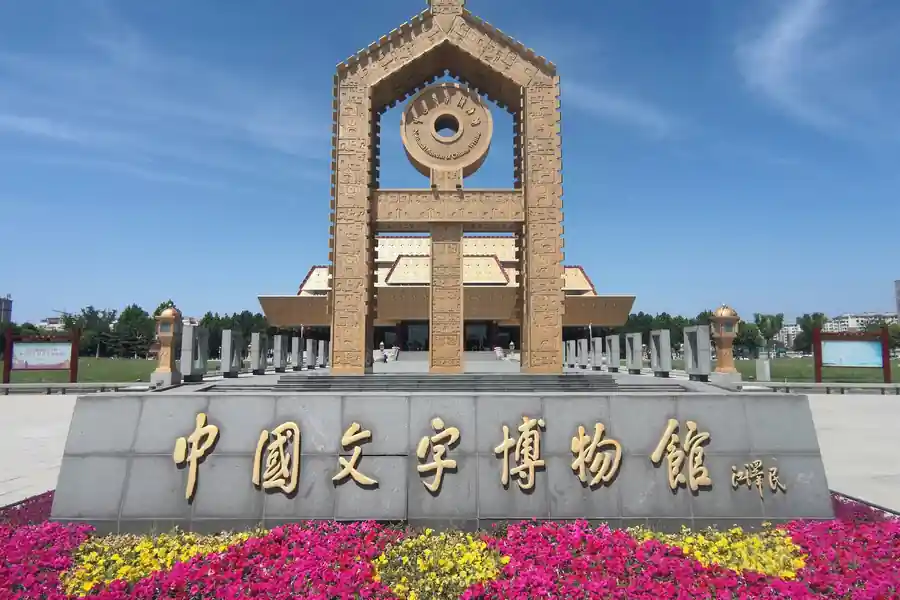

Anyang in Pictures
Real scenes from Anyang — landmarks, streets and everyday life.

Anyang Airport Transfer & Private Car
Anyang Hongqiqu Airport to downtown with a licensed professional driver. Fixed price, free flight tracking. Explore Anyang in comfort.
Anyang's Best Photo Spots
The places in Anyang worth stopping for — and a car that waits while you take the shot.
📍 Key sites include the Yinxu (Ruins of Yin
Best at sunrise
Key sites include the Yinxu (Ruins of Yin is one of Anyang's signature sights and a natural place to stop for a photo. Your driver drops you at the entrance, waits while you shoot, and takes you on to the next stop in the same area.
📍 UNESCO World Heritage Site with oracle bones)
Best in the late afternoon
UNESCO World Heritage Site with oracle bones) is one of Anyang's signature sights and a natural place to stop for a photo. Your driver drops you at the entrance, waits while you shoot, and takes you on to the next stop in the same area.
🏛️ Anyang Museum
Best at dusk
Anyang Museum is one of Anyang's signature sights and a natural place to stop for a photo. Your driver drops you at the entrance, waits while you shoot, and takes you on to the next stop in the same area.
🏯 Tianning Temple Pagoda
Best in soft morning light
Tianning Temple Pagoda is one of Anyang's signature sights and a natural place to stop for a photo. Your driver drops you at the entrance, waits while you shoot, and takes you on to the next stop in the same area.
Anyang at a Glance
Anyang blends local culture with regional attractions
Name Origin of Anyang
Anyang is one of China's oldest continuously inhabited cities. Its name has changed over time; it was the capital of the Shang dynasty (Yin) and later became known as Anyang during the Northern Wei period.
Anyang Education & Universities
Anyang Normal University and Anyang University are the main higher-education institutions in the city.
Getting Around Anyang
Anyang Hongqiqu Airport (AYN) offers domestic flights. Anyang Railway Station and Anyang East Station are on the Beijing–Guangzhou and Beijing–Kunming high-speed lines. Buses and taxis serve the city.
Anyang Natural Resources & Environment
Anyang lies on the North China Plain near the Taihang Mountains. The Yellow River basin influences the region's agriculture, and it has a warm temperate continental climate.
Top Anyang Attractions
Key sites include the Yinxu (Ruins of Yin, a UNESCO World Heritage Site with oracle bones), Anyang Museum, Tianning Temple Pagoda, and the Red Flag Canal (Hongqi Qu) scenic area.
Popular Anyang Routes
Fixed-price private car service for Anyang's most popular journeys.
Anyang Airport → Downtown
From ¥186($26.2)~30 km · 30–60 min · Economy/Business/MPV
Anyang Hongqiqu Airport (AYN) is the main gateway to Anyang, a short drive from the city centre. Your driver meets you at the arrival hall with a name board, tracks your flight for delays and takes you straight to your hotel — no taxi queue, no transfers.
Anyang → City Centre
From ¥186($26.2)~15 km · 20–35 min · Economy/Business/MPV
Anyang Railway Station is the main rail hub, with high-speed services serving Anyang. Your driver meets you on the platform side and takes you to your hotel in one direct ride.
Anyang → Ruins of Yin, a UNESCO World Heritage Site with oracle bones
From ¥546($76.9)~40 km · 60–90 min · 8-hour day trip
A day trip to Ruins of Yin, a UNESCO World Heritage Site with oracle bones is the classic Anyang itinerary — a private car takes you straight there and waits while you explore, then brings you back to the city in the evening.
Anyang City Tour (Full Day)
From ¥546($76.9)~60 km · 8-hour day trip
A full-day loop of Anyang's signature sights with a private car and a local driver who knows the shortcuts, the parking and the best hours for the photos.
Transparent Pricing in Anyang
Published rates, no estimate games. Check the numbers yourself before you book — and the price you see is the price your driver is paid from.
Fixed Price List — 安阳 (Anyang)
Published rates from our 2026 quote sheet. Renminbi first, USD for reference at 1 USD = ¥7.10. Every price below already includes tolls, parking, driver service and free airport waiting time (up to 60 minutes after your flight lands) — nothing is added on the day.
🛬 Anyang Airport & Intercity Transfer Rates
One flat fare for airport pickup, drop-off or city-to-city — intercity costs the same as the airport run. 35 km and 60 minutes included; beyond that we charge by the minute and the kilometre at the rates shown.
| Vehicle | Seats | Bags | Fixed fare | USD | Beyond 35 km / 60 min |
|---|---|---|---|---|---|
| 4-seat Economy Sedan | 4 | 2 | ¥186 | ≈ $26.2 | ¥0.88/min · ¥4.09/km |
| 4-seat Comfort Sedan | 4 | 2 | ¥265 | ≈ $37.32 | ¥0.98/min · ¥4.52/km |
| 6-seat Business Van | 6 | 3 | ¥322 | ≈ $45.35 | ¥1.04/min · ¥4.81/km |
| 8-11-seat Business Van | 11 | 4 | ¥562 | ≈ $79.15 | ¥1.35/min · ¥6.25/km |
| 12-18-seat Minibus | 18 | 4 | ¥655 | ≈ $92.25 | ¥1.51/min · ¥6.97/km |
| 19-55-seat Coach Bus | 55 | 5 | ¥686 | ≈ $96.62 | ¥1.72/min · ¥7.94/km |
🚗 Hourly Private Charter
Book the car and the hours, keep the car for the day. Unused kilometres can be carried into the next tier, so a long day never turns into a penalty. The driver stays with you — you set the stops.
| Vehicle | 2h / 35km | 4h / 50km | 6h / 75km | 8h / 100km | 10h / 125km |
|---|---|---|---|---|---|
| 4-seat Private Car | ¥221 | ¥351 | ¥468 | ¥546 | ¥572 |
| 6-seat Business Van | ¥286 | ¥455 | ¥611 | ¥715 | ¥741 |
| 8-11-seat Business Van | ¥412 | ¥655 | ¥880 | ¥1030 | ¥1067 |
| 12-18-seat Minibus | ¥494 | ¥786 | ¥1056 | ¥1236 | ¥1280 |
| 19-55-seat Coach Bus | ¥593 | ¥943 | ¥1267 | ¥1483 | ¥1537 |
Why travellers book Anyang with Chinawheely
Six things you get with every booking — in Anyang and across all 346 cities on the platform.
Licensed travel agency, not a ride-hail app
Chinawheely is a registered travel agency (L-HUB-101603). Your booking is a travel contract with a licensed operator — not a broker handing your number to whoever answers the phone.
One locked price, shown before you pay
The price you see is the price you pay. Tolls, parking, driver service and airport waiting time are already inside it. No surge pricing, no meter, no cash-on-the-day surprise.
Flight tracked, waiting time on us
We watch your flight number in real time. If it lands late or is delayed, your driver shifts with it and the waiting time stays on us — not on your bill.
A licensed driver who knows the city
Every car is driven by a professional local driver who knows the routes, the shortcuts and the parking that actually works near the attractions — with English communication and a name board on arrival.
Free changes up to 48 hours before
Plans move. Reschedule or cancel any booking free of charge up to 48 hours before your scheduled pickup, straight from your confirmation link.
A real human on WhatsApp, 8AM–12AM Beijing time
One message reaches a person who can re-price, re-route or re-plan your trip on the spot. No ticket queue, no chatbot loop.
Book Anyang at the published price
Pick your vehicle, see the fare line by line, and pay by PayPal or Alipay. Free changes up to 48 hours before pickup — or ask on WhatsApp and we will hold a car for you.
The quote is valid for 48 hours, and you can change or cancel free up to 48 hours before pickup.
Getting to Anyang: Airports & Railway Stations
How to reach Anyang by air, rail and road
✈️ Anyang Airports
✈️ Anyang Hongqiqu Airport (AYN)
Main gateway
Anyang Hongqiqu Airport serves Anyang. Our private car service meets you inside the terminal with a name board, tracks your flight and drives you straight to your hotel — no taxi queue, no navigating an unfamiliar transit network.
🚄 Anyang Railway Stations
🚄 Anyang Railway Station
Main rail station
Anyang Railway Station is the principal rail station for Anyang, with high-speed services on the national network. Taxis and buses meet arrivals at the station forecourt; a pre-booked private car is the easiest way to reach hotels and sights beyond the city centre.
🛣️ By road
Highways and expressways
Anyang is reached by expressway from the provincial capital and neighbouring prefecture cities. Driving distances are usually 2–5 hours, and a private car is often the most comfortable way to cover several sites in one day.
Food & Shopping in Anyang
What to eat and what to bring home from Anyang
🍽️ Must-Try Anyang Cuisine
Famous dishes include Anyang flatbread (Anyang shaobing), braised chicken, stewed noodles, and douhua (tofu pudding). Henan-style wheat noodles are widely available.
🛍️ Shopping in Anyang
Oracle bone replicas, Shang dynasty-style bronze souvenirs, and local wheat-based snacks are sold around Yinxu and the old city center.
🍵 Tea Culture in Anyang
Traditional Anyang teahouses serve loose-leaf tea in covered bowls, and the regional green teas are the usual house pour. Your driver can point you to a teahouse that specialists use.🚗 Private Car for a Food Crawl
A private car and driver lets you start at the morning market, cross the city for lunch, and finish at an evening teahouse without worrying about parking or the last bus back to your hotel.
Intangible Cultural Heritage & Living Crafts in Anyang
The tea houses, workshops and old-quarter crafts of Anyang
🍵 Tea Culture in Anyang
Tea culture runs through the day in Anyang: loose-leaf houses serve the region's own greens in covered bowls, and the older teahouses are where the city's social life happens.
🏺 Local Crafts & Products
Oracle bone replicas, Shang dynasty-style bronze souvenirs, and local wheat-based snacks are sold around Yinxu and the old city center.
🏛️ Heritage & Landmarks
Ruins of Yin, a UNESCO World Heritage Site with oracle bones is the heritage anchor of Anyang, and the old town streets around it are where the city's traditional crafts, small workshops and family businesses are still concentrated.
Anyang Local Secrets
Insider tips to help you experience Anyang like a local
🎭 Start at the landmark
Ruins of Yin, a UNESCO World Heritage Site with oracle bones is the sight everyone should build the day around. Ask your driver to arrive early, when the coaches have not arrived yet, and to wait nearby rather than circling the car park.
🥢 Skip the tourist menu
Eat where the queues are shortest: the morning market and the small noodle shops a block back from the main square usually feed locals at a fraction of the tourist-restaurant price.
⏱️ Plan the driving time
Allow extra time between the airport or main station and the old town — the city spreads out, and the distance that looks short on a map can take half an hour in traffic.
Day Trips from Anyang
Real destinations around Anyang, reached comfortably with a private car and a licensed professional driver.
Best Time to Visit Anyang
The climate record of Anyang decides when the city is at its most comfortable to walk.
The annual average temperature is 14.3 °C; annual rainfall averages 552 mm; July is the hottest month at 27.2 °C; January the coldest at -0.8 °C; The climate pattern includes continental influence, the monsoon, drought.
Spring
Monthly means in March, April, May run 8–21 °C. Rainfall over those three months totals about 86 mm.
Highlights:
Summer
Monthly means in June, July, August run 26–27 °C. Rainfall over those three months totals about 345 mm.
Highlights:
Autumn
Monthly means in September, October, November run 7–21 °C. Rainfall over those three months totals about 103 mm.
Highlights:
Winter
Monthly means in December, January, February run -1–3 °C. Rainfall over those three months totals about 18 mm.
Highlights:
Useful Chinese Phrases for Anyang
A few words go a long way with your driver and locals.
👋 Nǐ hǎo
你好
Hello — The universal greeting. Your driver will appreciate the effort.
🙏 Xièxiè
谢谢
Thank you — Use it often. Chinese people value politeness highly.
🚗 Wǒ xiǎng qù...
我想去...
I want to go to... — Essential for telling your driver the destination.
💰 Duōshao qián?
多少钱？
How much is this? — Useful for shopping and street food.
🚽 Cèsuǒ zài nǎlǐ?
厕所在哪里？
Where is the bathroom? — Always good to know when exploring.
Popular Anyang Airport Transfer Routes
🚗 Key sites include the Yinxu (Ruins of Yin Airport Transfer
Key sites include the Yinxu (Ruins of Yin is a City Highlight in Anyang. Private car from Anyang airport to Key sites include the Yinxu (Ruins of Yin — fixed price, door-to-door, flight monitoring.
View Details & Book →🚗 UNESCO World Heritage Site with oracle bones) Airport Transfer
UNESCO World Heritage Site with oracle bones) is a City Highlight in Anyang. Private car from Anyang airport to UNESCO World Heritage Site with oracle bones) — fixed price, door-to-door, flight monitoring.
View Details & Book →🚗 Anyang Museum Airport Transfer
Anyang Museum is a Museum & Culture in Anyang. Private car from Anyang airport to Anyang Museum — fixed price, door-to-door, flight monitoring.
View Details & Book →Book Your Anyang Airport Transfer
Fixed price, licensed professional driver, free flight tracking. From Anyang Hongqiqu Airport to any Anyang hotel.
Get Instant QuoteQuestions? WhatsApp +86-155-2777-1775
Travel Essentials for Your Anyang Trip
Make your Anyang journey smoother with these essential services.
Mobile Pocket Wi-Fi
Stay connected anywhere in China with a pocket Wi-Fi device. Pre-book online and pick up at the airport or have it delivered to your hotel.
Book Wi-Fi at ChinaWiFiGoEnglish-Speaking Guide
Explore China's history and culture with a professional English-speaking guide. Custom tours, skip-the-line access, and insider knowledge.
Book Guide at VIPChinaGuideMedical Services
Add a health checkup, dental cleaning, or TCM treatment to your trip. China's world-class medical services cost 70% less than in the US or Europe.
Book Medical at MediEscortChinaTea Culture & Teahouse Guide in Anyang
Where to sit down for a bowl of tea in Anyang
🍵 Tea Houses of Anyang
Tea culture runs through the day in Anyang: loose-leaf houses serve the region's own greens in covered bowls, and the older teahouses around the old town are where the city's social life happens.
🫖 A Gongfu Tasting
Most visitors try a gongfu-style tasting session — a host brews one tea at a time and explains how the leaves open — and pair it with the local snacks sold in the same establishments.
💡 Tea Etiquette Tips
Ask your driver for the teahouse that locals favour rather than the loudest one on the tourist route; the best rooms are usually a short walk from the market, and a quiet hour there is the cheapest and most rewarding way to understand the city's pace.
More China destinations
Compare routes, published prices and local driver tips across the cities we cover.
Other cities in Henan
Popular destinations